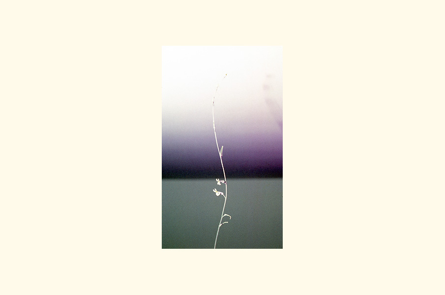
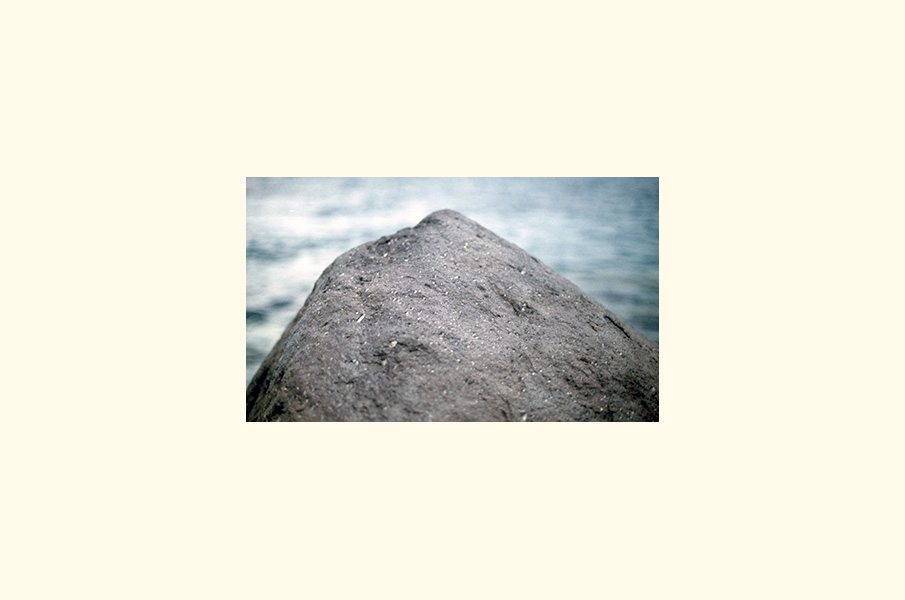
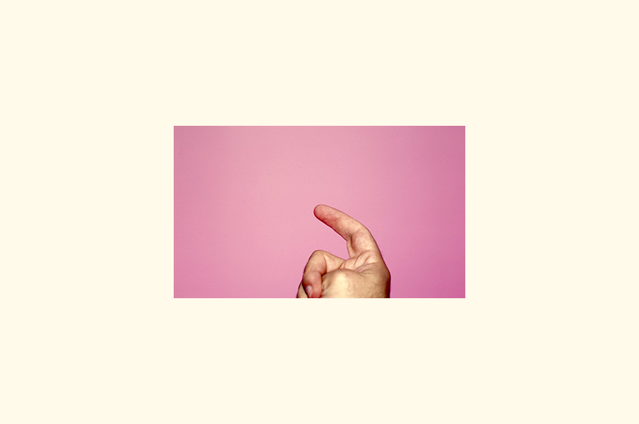
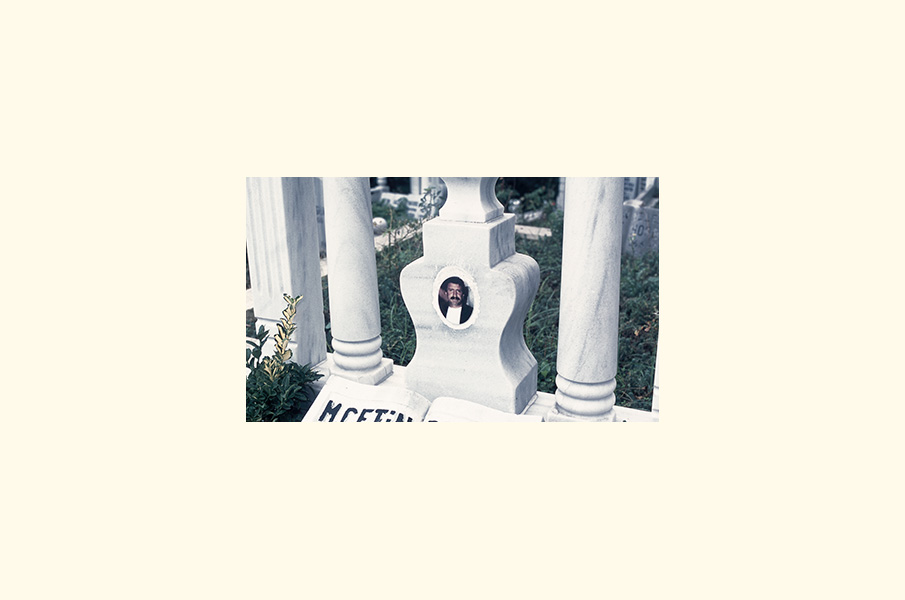
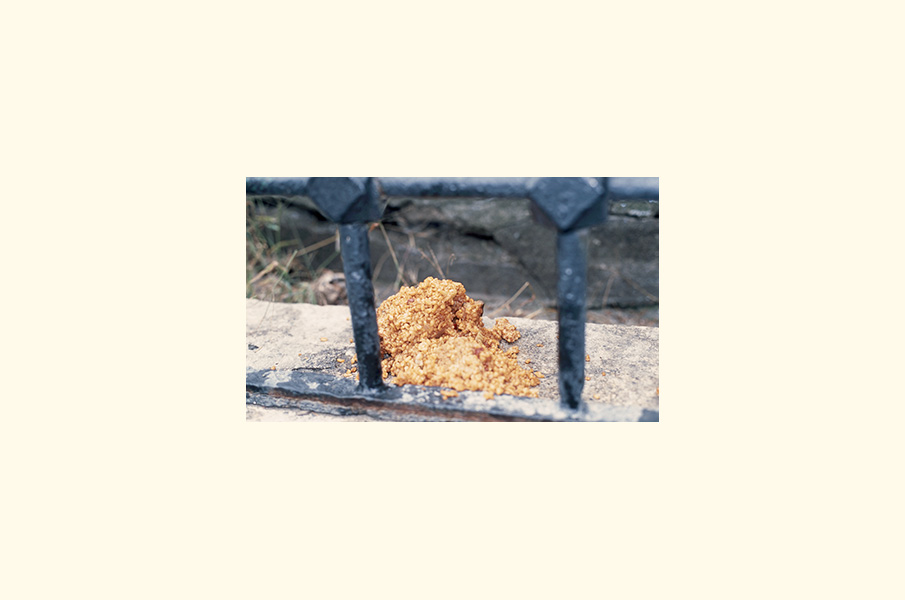
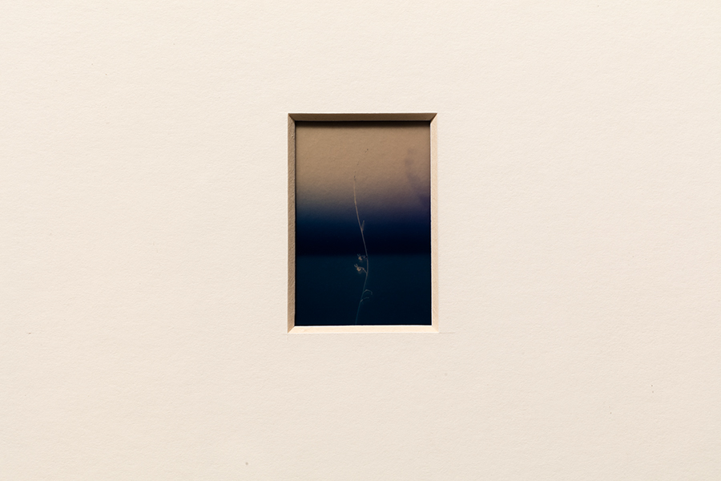
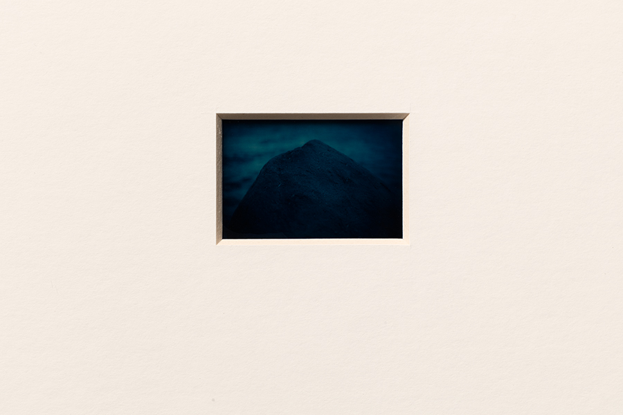
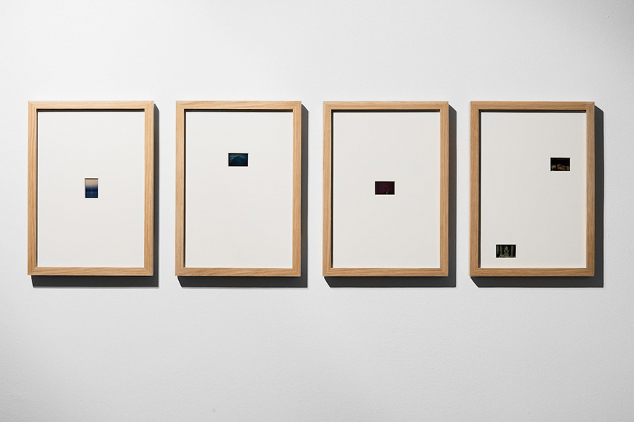
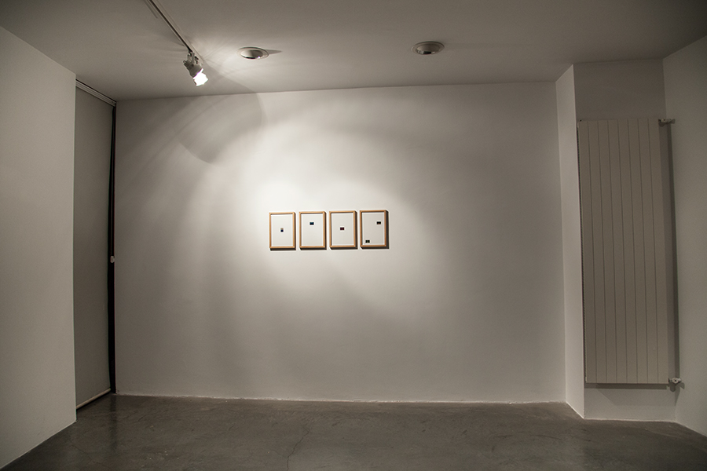

ateloprosopia
2014ateloprosopia: at·e·lo·pro·so·pia (at″ə-lo-pro-soґpe-ə) [atelo- + prosop- + -ia]
congenitally incomplete or imperfect development of the face.









Grace of Another World, 31 October – 19 December 2015
.artSümer Gallery, Istanbul
Curated by Nihan Çetinkaya
Artists: Yağız Özgen, Ayşe Bezenmiş, Merve Şendil, Yavuz Erkan, Serra Behar, Gümüş Özdeş, Eda Gecikmez, Erhan Özışıklı, Güneş Çınar, and Emrah Altınok